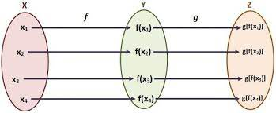
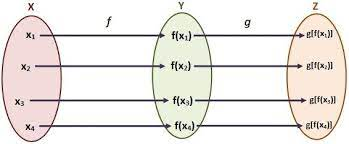

FUNCIONES COMPUESTAS
El cálculo diferencial es una parte del cálculo infinitesimal y del análisis matemático que estudia cómo cambian las funciones continuas según sus variables
cambian de estado. El principal objeto de estudio en el cálculo diferencial es la derivada. Una noción estrechamente relacionada es la de diferencial de una
función.
El estudio del cambio de una función es de especial interés para el cálculo diferencial, en concreto el caso en el que el cambio de las variables es
infinitesimal, esto es, cuando dicho cambio tiende a cero (se hace tan pequeño como se desee). Y es que el cálculo diferencial se apoya constantemente en el
concepto básico del límite. El paso al límite es la principal herramienta que permite desarrollar la teoría del cálculo diferencial y la que lo diferencia
claramente del álgebra. Desde el punto de vista filosófico de las funciones y la geometría, la derivada de una función en un cierto punto es una medida de la
tasa en la cual una función cambia conforme un argumento se modifica. Esto es, una derivada involucra, en términos matemáticos, una tasa de cambio. Una
derivada es el cálculo de las pendientes instantáneas de {\displaystyle f(x)}f(x) en cada punto {\displaystyle x}x. Esto se corresponde a las pendientes de las
tangentes de la gráfica de dicha función en sus puntos (una tangente por punto); Las derivadas pueden ser utilizadas para conocer la concavidad de una
función, sus intervalos de crecimiento, sus máximos y mínimos. La inversa de una derivada se llama primitiva, antiderivada o integral.
 

Diferenciación y diferenciabilidad
Una función de una variable es diferenciable en punto {\displaystyle x}x si su derivada existe en ese punto; una función es diferenciable en un intervalo si lo
es en cada punto {\displaystyle x}x perteneciente al intervalo. Si una función no es continua en c, entonces no puede ser diferenciable en c; sin embargo,
aunque una función sea continua en c, puede no ser diferenciable. Es decir, toda función diferenciable en un punto c es continua en c, pero no toda función
continua en c es diferenciable en c (como f(x) = |x| es continua, pero no diferenciable en x = 0).
Noción de derivada
Las derivadas se definen tomando el límite de la pendiente de las rectas secantes conforme se van aproximando a la recta tangente. Es difícil hallar
directamente la pendiente de la recta tangente de una función porque sólo se conoce un punto de esta, el punto donde ha de ser tangente a la función. Por ello,
se aproxima la recta tangente por rectas secantes. Cuando se tome el límite de las pendientes de las secantes próximas, se obtendrá la pendiente de la recta
tangente.
Para obtener estas pendientes, tómese un número arbitrariamente pequeño que se denominará h. h representa una pequeña variación en x, y puede ser tanto
positivo como negativo. La pendiente de la recta entre los puntos (x,f(x)) y (x,f(x)) y es
F(x+h)-f(x)/h
Esta expresión es un cociente diferencial de Newton. La derivada de f en x es el límite del valor del cociente diferencial conforme las líneas secantes se acercan más a la tangente:
f(x+h)-f(x) f'(x)=f(x+h)-f(x)/ h
Si la derivada de f existe en cada punto x, es posible entonces definir la derivada de f como la
función cuyo valor en el punto x es la derivada de f en x.
Puesto que la inmediata sustitución de h por 0 da como resultado una división por cero, calcular la
derivada directamente puede ser poco intuitivo. Una técnica consiste en simplificar el
numerador de modo que la h del denominador pueda cancelarse. Esto resulta muy sencillo con
funciones polinómicas, pero para la mayoría de las funciones resulta demasiado complicado.
Afortunadamente, hay reglas generales que facilitan la diferenciación de la mayoría de las funciones
PAGINA DE APOYO SOBRE EL TEMA: FUNCIONES COMPUESTAS